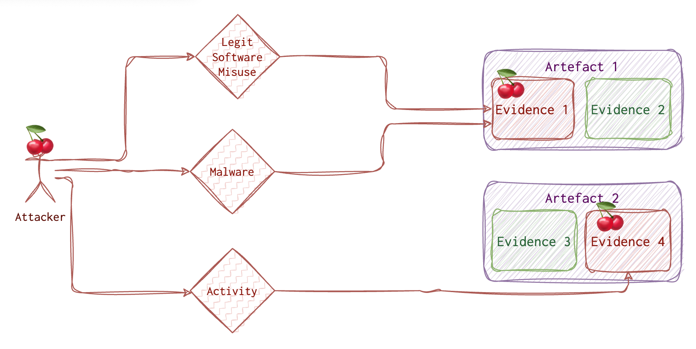
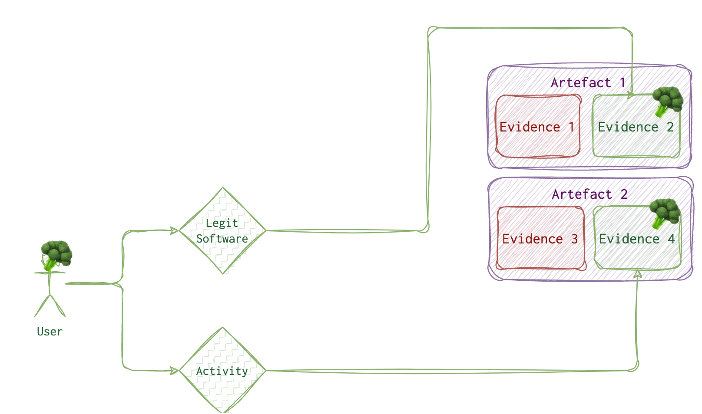
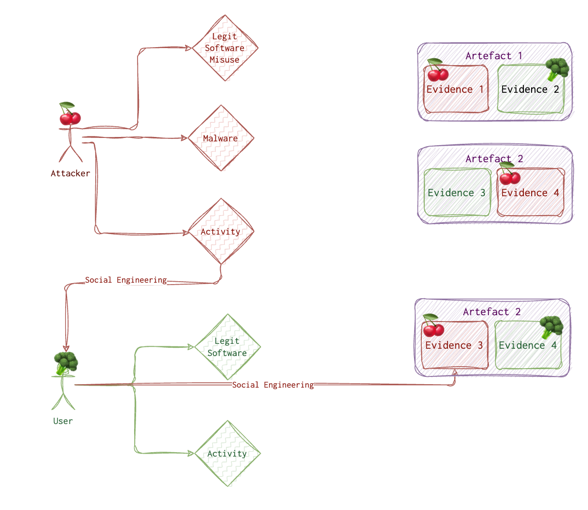

One can detect something automatically or look for it. So, the investigation (incident response and digital forensics) can either start from a security alert or threat-hunting. Let’s dive deeper into what techniques are used to spot the attacker.
Both legitimate users and attackers produce the evidence by intentionally or inadvertently altering the artefacts. Intentional altering of artefacts is complex and only sometimes possible. There are several ways the attacker can perform activity on a system; let’s see what these are.

The attacker needs to do his job. So, the attacker needs to use some tools, and whatever he or she uses will leave a trace. Even wiping the traces leaves some traces. Although finding those traces is only sometimes straightforward, it’s usually possible. There are two options for the attacker:
- Physical access. One can steal a laptop or use the unlocked machine while the employee is having lunch.
- Remote access. Most of the time, the attacker doesn’t have physical access and needs to do some research and crafting to get the “treasure”.
There are various ways to get initial access, and those techniques are well covered on the MITRE website. Once this access is acquired, the attacker has limited options to go forward with. One of them and frequently used by the attacker, is using some malware 🦠. Of course, he needs to deliver this malware to the system and run it. Running malware leaves traces 🐾. Sometimes (quite often), the attacker will try to use the legitimate tools already preinstalled on the target machine. And guess what? These tools also leave traces 👣! The trick here is to investigate WHO ran this tool 🤔.
Another option the attacker 🍒 has is social engineering vector, including various phishing attacks, tailgating etc. But eventually, this also comes to running something on a machine, be it a legit program or not so much.

Let’s imagine a legitimate ordinary user with no malicious intent or malware installed. What would their daily activity look like? Also, running some programs which, of course, leave some traces.
But how do we distinguish between a legitimate user 🥦 and an attacker 🍒? When we find malware, and we see its traces 🐾 on the system, it’s one story. But what if the attacker got remote access to the system and used a legit tool on the user’s 🥦 behalf? What if the attacker 🍒 has tricked the user 🥦 into running something evil? How do we know it’s 👣 and not 🐾? Sometimes we don’t.

Detection Types
Unless we protect a small company with 2-3 computers, we can’t afford to repeatedly spend days on a single machine to ensure everything is in order. And even if we had that much time, it could be more practical. In the ideal scenario, we would want to automatically detect as much as possible and then manually examine only systems that were likely compromised.
Unless the attacker has physical access to the machine, tricked the legit user into doing bad things or has some RDP or similar access due to misconfiguration, they need to run some process (usually malware) to hook and achieve their goals. So, there are three types of processes traces of which we need to look out for:
- 🥸 Active malware
- 😴 Dorman malware (will run eventually and become 🥸)
- 🤪 Living Off the Land (LOL)
I will use these emojis for detection and threat-hunting techniques suitable for this process type.
🖲️ Automated
We can leverage the following data to write and tune our threat-hunting rules:
- ✍🏻 Antivirus and signatures 🥸 and 😴
- 👣 IoCs 🥸 , 😴 and 🤪 (LOL is trickier)
- 🤨 Anomalies (Legit Automated Process and Malware) 🥸 and 😴
Now, these only sometimes work and fire. First, signatures are useless if it’s a new malware or a modified or polymorphic one. Besides, signature databases grow more extensive and are harder to manage. Besides, think about it, humans sometimes create signatures, and humans make mistakes. Even if you have some perfect Yara rule, it takes time to scan the system, and you can’t possibly have a perfect rule for every single malware out there. Besides, attackers do not always use malware; sometimes, they use what’s already on the system and is legit.
Secondly, there will be no IoC (Indicators of Compromise) if it’s a new campaign. Also, some IoCs become irrelevant very quickly. For example, it’s fairly easy for the attacker to change an IP address, domain name, file hash or name.
Anomalies are more reliable and long-living, but there is still a good chance of missing something that is not seen as an anomaly. For example, the attacker stole the admin creds and used the admin tools from the admin machine during working hours. What’s anomalous about that?
Pattern-based and behavioural deviations are good techniques to use here.
⛏️ Semi-automated and Manual Examination
We know some things about the attackers that are usually the same across different actors: they need to achieve their goals (usually, they are after the information), they need to stay persistent, and usually, they need to hop from one machine to another. We can assume the attacker would target specific locations and settings if they sneak through our detection mechanisms. The persistence techniques are limited, as are those for lateral movement.
- Persistence mechanisms. For example, checking a Windows machine’s
RunandRunOncekeys can sometimes reveal something suspicious. - Artefacts and logs collected across multiple machines.
- Timeline analysis
- RAM
Stacking and frequency analysis is very good approaches here.
🔬 Deeper Look
This only makes sense when we have a limited list of machines to examine. We could look at the same artefacts as in the previous step. Forensic acquisition and analysis are exactly what this step is about. RAM analysis is usually performed in this step (not always necessary or possible). We would check for filesystem metadata (like MFT on NTFS) and analyse unallocated or slack space. Of course, attackers want to avoid being easily found, so they employ evasion techniques. We would also look out for possible anti-detection and anti-forensics techniques.
This step is the best and sometimes the only bet for finding dormant 😴 malware and LOLs 🤪. Also, don’t forget that sometimes it’s as “simple” as an insider threat (not actually that simple), so, a deeper look to prove intent could be due.
Pattern-based analysis, behavioural analysis, stacking, frequency analysis, and finding evil are excellent techniques for this step.
Detection Techniques
Find Evil
One of them is called “Find Evil” 👿. For this method, you need to know a baseline. It helps to run some collection for a clean system to see the baseline for this OS/setup if you are unsure. Otherwise, looking at the data, you might notice something standing out, like a Windows core process spawned from the wrong direction or an HTTP traffic flowing back and forth from a java.exe. Another example: suddenly increased server requests could indicate nefarious activity. Again, you need to know the baseline to tell if something is wrong.
🛠 Typically, this kind of stuff (spikes) is picked up by the IDS/IPS/WAF systems quite neatly. 🗒 TODO: https://www.open-scap.org/security-policies/scap-security-guide/.
Known Good
Of course, to find evil, one needs to know what’s NOT. Only some of the files are worth considering. However, it takes a lot of work to keep all of them in mind. I’ve made several database files that contain information on files on a clean installed system. There will be some divisions, but I hope it will also help eliminate a massive pack of files.
When reviewing processes and artefacts for potential maliciousness, I use the following list, where items are ordered by their likelihood of being malicious.
- Outstanding
exeor batfilesnamed with one digit or letter likea.ps1,1.bat.a.exeetc. - Drivers that were installed recently or that I need to recognise.
- Unfamiliar program names (google or ask ChatGPT to know more about such programs)
- Familiar programs in unusual places
- Programs that seem legit are in the expected folders (last resort).
Behavioural Analysis
A little more sophisticated “Find Evil” technique is what I call behavioural analysis. For this method, you must think like an attacker and a regular user. For example, for everyday use, the failed login process would look something like the following:
- First login attempt - error
- Second login attempt - error
- Third login attempt - error
- Reset password
- Login
For a malicious user, it would be something like (brute-forcing):
- First login attempt - error
- Second login attempt - error
- N-login attempt - account blocked
- Sleep for N minutes
- M-login attempt - error
- etc
For a malicious user attempting password spraying attack (when one password is used for different accounts), you are likely to do something like the following:
- First login attempt - error
- Second login attempt - error
- Third login attempt - error
- Stop (no successful login or password reset)
Frequency Analysis
Another technique is called frequency analysis 📊. Depending on the system, you’d look for something more or less frequent. Covering all the cases is hard, but some examples may do the trick. For example, you have a web server. Most of the time, with regular traffic and no malicious activity, there would be 200 status codes returned by the server. However, if an attacker performs a brute force attack against user accounts or IDOR probing, you would see a spike in the 403 (access denied) HTTP status code. If the attacker were to perform some directory busting, you would probably see a point in 404.
🛠 SIEM/IDS + ML (machine learning engine) could help identify those “unusual things”. Some SIEM would allow making rules based on different log fields. So, for example, in the above scenario, one could create a rule to alert the CSIRT if a 100 threshold for 404 HTTP status code returned is hit in 1 minute.
Pattern-based Analysis
One more technique that I have been using I call pattern analysis. This one needs to be VERY knowledgeable about red teaming activities and current vulnerabilities. Refrain from overwhelming yourself with the openness and exploits out there, and filter the news and feeds only to show those relevant to your environment. For example, see only Apache Tomcat stuff, PHP and nginx + common web application vulnerabilities. Patterns for each vulnerability exploited would be different, of course. For example, for an SQLi, it’s something like a single quote (') or sleep keyword (also could indicate command-line injection) or some other pattern like 'or%201=1-- or anything from list and even more. You can find the list of payloads (designs) for common vulnerabilities online to get a general idea.
🛠 For post-incident analyses, I find it helpful to use Excel/Numbers due to their advanced pivoting and filtering functionality. It’s useful for both frequency and pattern analysis. This, however, will only work for offline analysis and only on data that’s not too overwhelming. If you are familiar with the querying language, SIEM tools can also be convenient for visualisation and filtering.
So, knowing the red team operations, possible attacks on your infrastructure, and standard user behaviour is helpful.
TTPs and ATT&CK MITRE
Cyber Analytics Repository - https://car.mitre.org/. That’s basically what I was planning to write here, but it’s already implemented and in a very neat way. Each tactic is described here, with a short description, categorisation, Splunk queries, and available tools. As I said, need.
Matrices are another way to categorise attackers’ tactics and techniques. It’s a table (enterprise and mobile). In these tables, attacking techniques are categorised by type and by attack stage. Clicking on any technique will bring you to its description, mitigation and detection tips.
What can I add to this? I don’t know right now. I am relieved that I don’t have to do it myself and, at the same time, disappointed I don’t get to research and analyse this information myself. I could add some examples from my own experience…., or additional tips… That’s some food 🍱 for thought. Here is a link to contribute. It looks like they are looking for more macOS and Cloud tactics, and since I am particularly interested in these, it might be my niche.
One additional thing I could do here is to develop a learning plan. And use it as a sketch to sort other content on this website accordingly.
The interesting part is that if you look at MITRE, you will notice that lateral movement and initial access both have the least number of techniques.

What does it mean? It means that you have more chances to tune the detection mechanisms for these stages and then deduce and validate hypothesis for other stages.
Investigation Techniques
When we have a lot of data, we need to eliminate all the noise to make the above techniques easier to use. One way is to combine all the data of the same type from all the machines and apply the above techniques to the data set. Think of it as a huge database of data (SIEM, if you will). Another way is to use each artefact to pivot around it to look for other related artefacts.
Stacking
It’s not a separate technique per se. Instead, it refers to analysing a bunch of systems. You would use either of the techniques above for a BUNCH of systems. Frequency analysis is usually the first one to go. Items that appear a few times or are seen on one system only usually stand out.
Prioritise And Pivot
There are different paths to follow to answer the same questions. Some are more efficient.
I am pulling on threads. Find a piece of evidence and focus on that to fully understand it. Example (depth search):
- Looking for malware and finding program run entries for malware
- Stop looking for other malware and focus on that one.
- What happened before and after?
- What else is in the same folder?
- What does it do?
- Repeat for each you find
How to find the first evidence? Prioritise or brute force.
- Prioritise (Manual). You always need to find out where the evidence is going to be.
- impact on the investigation result
- likelihood of finding anything
- False positive?
- time required
- Brute force (Automated). Let tools and software find evidence.
Cyber Triage: can I mark something as wrong and run the analysis for this piece of evidence again? - yes
See the general schema here.
The main idea is to concentrate on some areas and answer some specific questions, like:
- Is there child exploitation material? Search videos and pictures.
- Is this PC compromised? It needs to be more prominent.
- Who did this computer communicate with?
First option:
Big problem –> n*(minor problem). Recursively break a problem into minor issues until one becomes solvable.
Second option:
Or we can be guided by artefact ⛏️ categories.
First, break the more significant problem into smaller ones. Then answer questions with artefact ⛏️ categories.
Here is the pseudocode for this:
function breakIntoSmallerProblems(Stack problemStack, int stacked){
if problemStack.len == 0 return 0;
currentProblem = problem.pop;
get artifacts(poseQuestion(current problem, stackLen));
breakIntoSmallerProblems(problemStack);
}
function poseQuestion(string problem, int stackLen){
if (stackLen < 100) prioritisize(problem);
else answerWithAutoTools(problem);
}
How does a computer work? Hardware, OS, Processes. How does the attacker work? Remote access changes, detection avoidance etc.
RoadMap
- Is the system compromised?
- Are there mal-related changes?
- Is there mal user activity?
- Suspicious logins?
- Login artefact category ⛏️: Event log 4624, 4778, active users etc
- Suspicious logins?
- Are there malware progs?
- Are there mal OS changes?
Prioritisation is based on: likely relevance, result accuracy, and time to answer.
Beginner: start with a process and fill in categories
Advanced: when you already know about classes, think from that perspective.
Manager: categories
Cyber Triage User: same
File name –> meta –> content
Critical Thinking
Challenge assumptions (sometimes it’s something you have not seen or dealt with before), consider alternatives, evaluate data, identify critical drivers, and understand the context.
List all assumptions and ask yourself how sure you are of these statements and what might happen if they are wrong. Categorise these assumptions based on certainty. Refine and remove those assumptions that are proven to be incorrect. Identify additional data needs for those assumptions that are still uncertain. Research?
Think about the alternatives, for example, brainstorming. Ask yourself the six W’s to help develop the other options. The null hypothesis is the opposite of the central hypothesis (for anomalous data).
Know your data! Know normal and abnormal. Establish the baselines for average to detect the bizarre (like, a clean system installation is examined, and everything is compared to it). Look for inconsistent data. **Assess the data against different hypotheses to see how well it fits.
Identify critical drivers: technology, regulatory (laws and standards), society (politics, people want to be safe), supply chain (logistics, cost, scheduling, customer requirements), employees (skills and training needed), threat actors (tech capabilities, motives, opportunity).
Understand the context from the perspective of different stakeholders. Framing techniques help keep everyone on the same page (what do they need from me, how can I frame the issue, do I need to place their questions in a broader context). Same vocabulary. Steps:
- Key components. Break the problem down and identify the parts, actors and categories.
- Factors at Play.
- Relationships. Static? Dynamic? Graphing.
- Similarities/Differences. Leverage past work!
- Redefine. Rephrase and paraphrase the issue. What is the root cause?
💡 Maybe it’s better to arrange it as a table. Merge with the information from the Cyber Triage DFIR webinar by Brian Carrier and Digital Archaeology.
How to prove compromise❓
TODO: Move to Canva, make a decision tree from it rather
Lot’s of attacks involve account compromise. In some cases malware is not even needed. There are several arguments for the defence: I didn’t know, It was not me, It was a malware and It happened accidently.
✍️ Suspicious logins?
- Should this user use this account?
- Are they new to the computer?
- If remote, does the account usually come from that computer?
- Is the time expected?
- Does the account have lots of failed logins? 👉 A very strong indicator of compromise
- A login during time when the user was absent 👉 A very strong indicator of compromise
✍️ Malware. There is a separate section for malware, but it can be a strong defense for someone claiming their account was compromised. But! ⚠️ Even if there is a malware found, it’s essential to prove that it existed at the time that some investigated activity took place.
How to prove intent ❓
❓ So, back to the question. How to prove that the user knows?
✍️ Suspicious activity?
- What searches were performed?
- Search relevant to job role?
- Search for malicious progs or techniques?
- Was there an attempt to delete the evidence? For example, the browser cache cleared manually depends on this browser settings.
- Access resources.
- Accessed malwebsite?
- Network shares?
- Mass copy? 👉 Might be an indicator of data exfiltration.
- Was it a result of a redirect (300 HTTP or header redirect, or pop-up) 👉 May help the defending side if this can be proved.
- File accessed soon after creation? 👉 Might be an indicator of some automated task, or not…..
- Was a file deleted/wiped? 👉 File wiped is a strong indiator of intent. 🛠 Directory Snoop can show that the file was wiped, not simply deleted. Not all wiping software clears the
$MFTtable. - What devices were attached?
- Remotely executed code. Remote host + username; interactive or cmd; time. Registry. Event logs for logins and Event login for remote processes.
- Remote = local?
- Expected?
- Prog expected?
- Communications. Messangers, emails, social networking, forums, websites.
- Determine all the mail clients used and use this information to find artefacts. ❗️❗️❗️❗️ Link to collection.
- Relevant threads (
strings+grepor DFIR framework). - IP in mail spoofed?
👣 User started processes (Event log, RunMRU, MUICache, UserAssist, AppCompatCache or Shimcache, BAM (Background activity monitor), RecentApps, RecentFilecache or AmCache, SRUM (system resource usage monitor), Windows Timeline, Prefetch).
👣 Terms and time when the search was performed. Web artifacts and saved previous searches.
👣 Includes Host (remote or local), path, time. (configs like history of browser; recently used files, process handles). FileExplorer’s ShellBags (what folder was opened) and RunMRU,Application Most Recently Used Files, Web artifacts (cookies, history, db, cache), Memory (commands, remote desk info, paths), cont monitoring.
👣 Event logs, domain logs. The below question may help finding a malicious user (hacker) or malicious insider with intent. More here.
👣 Mails. ❗️❗️❗️❗️ Link to collection.
How to prove user knew ❓
✍️ It’s often not enough just to find a file on a system. One needs to prove the intent. Remember to use more than one artifact whenever possible! For example, the user may be insisting that he or she did not download this file. But, if the browser was set to flush data every 7 days and the timestamps for the deleted file shows it was deleted an hour after it was deleted - this might raiser some reasonable doubt I think 🤔. Or, the file was wiped 🧹 (it’s contents filled with 0s). If one didn’t know it existed, why delete it? Or there is no data on the PC indicating the use of the file, but it was continuously downloaded/uploaded according to the server logs. ⚠️ This, however, won’t prove that there was no hacker in place!
Types of Users
Actually, as I read further an further, it seems that everything is about a user. But!
A user can be of several categories. I’ll name each one as shortly as I can to refer to them in future. But I will describe them in more detail below.
Legitimate user, who has done something bad by accident. Let’s call him a dummy 😬. I’ve been there, I once changed permissions to Deny for my admin account to disk C on Windows and could do nothing about it later. How stupid was it 🙈? My excuse is that I only started with PCs… .
Legitimate user, who has done something bad by intent. Let’s call this one a poopy 💩. Say, he or she feels highy underpaid and sells company’s kitty plans to some evil dog hackers.
A user created and used by a hacker. This one I will call a sheep 🐑 as in A wolf in sheep’s clothing, since the attacker is trying mask itself as something good. This one is not unusual, but I guess, easily determined by the sysadmin. However, there are some cases, when an attacker can change view permissions for his/her account on AD so that no one will see this user.
A user created legitimately, but compromised by a hacker and doing something by intent. This one will be a donkey 🦓, as the attaker is using another account for his ride. I guess it’s the most common when the hackers are in the picture.
And here are the questions we will have to answer during investigations, that can help in distinguishing between these types.
Dummy 😬 vs Poopy 💩
❓ How to prove that the person didn’t do it on purpose, but by accident?
✍️ It’s often not enough just to find a file on a system. One needs to prove the intent. Remember to use more than one artifact whenever possible! For example, the user may be insisting that he or she did not download this file. But, if the browser was set to flush data every 7 days and the timestamps for the deleted file shows it was deleted an hour after it was deleted - this might raiser some reasonable doubt think 🤔. Or, the file was wiped 🧹 (it’s contents filled with 0s). If one didn’t know it existed, why delete it? Or there is no data on the PC indicating the use of the file, but it was continuously downloaded/uploaded according to the server logs. ⚠️ This, however, won’t prove that there was no hacker in place!
Sheep 🐑 vs others 💩, 😬 and 🦓
✍️ Are there suspicious accounts? 👣 SAM reg hive (local and domain). Even if the account is deleted, then you can still spot it: user directory sometimes is retained and also check logs. The below question may help finding a malicious user (hacker). More here.
- User Name does not match conventions for this organisation?
- Weird priviledges
- Scope (local or domain)
- Creation time and date.
Poopy 💩 vs donkey 🦓
❓ How to prove that the account was compromised?
Lot’s of attacks involve account compromise. In some cases malware is not even needed. There are several arguments for the defence: I didn’t know, It was not me, It was a malware and It happened accidently.
✍️ Suspicious logins?
- Should this user use this account?
- Are they new to the computer?
- If remote, does the account usually come from that computer?
- Is the time expected?
- Does the account have lots of failed logins? 👉 A very strong indicator of compromise
- A login during time when the user was absent 👉 A very strong indicator of compromise
✍️ Malware. There is a separate section for malware above ☝️, but it can be a strong defense for some one claiming his or her account was compromised. But! ⚠️ Even if there is a malware found, it’s essential to prove that it existed at the time that some investigated activity took place.
Poopy 💩 and donkey 🦓 vs others 😬 and 🐑
✍️ Suspicious activity?
- What searches were performed?
- Search relevant to job role?
- Search for malicious progs or techniques?
- Was there an attempt to delete the evidence? For example, browser cache cleared manually, depends on this browser settings.
- Access resources.
- Accessed malwebsite?
- Network shares?
- Mass copy? 👉 Might be an indicator of data exfiltration.
- Was it a result of a redirect (300 HTTP or header redirect, or pop-up) 👉 May help the defending side if this can be proved.
- File accessed soon after creation? 👉 Might be an indicator of some automated task, or not…..
- Was a file deleted/wiped? 👉 File wiped is a strong indiator of intent. 🛠 Directory Snoop can show that the file was wiped, not simply deleted. Not all wiping software clears the
$MFTtable. - What devices were attached?
- Remotely executed code. Remote host + username; interactive or cmd; time. Registry. Event logs for logins and Event login for remote processes.
- Remote = local?
- Expected?
- Prog expected?
- Communications. Messangers, emails, social networking, forums, websites.
- Determine all the mail clients used and use this information to find artefacts. ❗️❗️❗️❗️ Link to collection.
- Relevant threads (
strings+grepor DFIR framework). - IP in mail spoofed?
👣 User-started processes (Event log, RunMRU, MUICache, UserAssist, AppCompatCache or Shimcache, BAM (Background activity monitor), RecentApps, RecentFilecache or AmCache, SRUM (system resource usage monitor), Windows Timeline, Prefetch).
👣 Terms and time when the search was performed. Web artifacts and saved previous searches.
👣 Includes Host (remote or local), path, time. (configs like history of browser; recently used files, process handles). FileExplorer’s ShellBags (what folder was opened) and RunMRU,Application Most Recently Used Files, Web artefacts (cookies, history, db, cache), Memory (commands, remote desk info, paths), cont monitoring.
👣 Event logs, domain logs. The below question may help finding a malicious user (hacker) or malicious insider with intent. More here.
👣 Mails. ❗️❗️❗️❗️ Link to the collection.